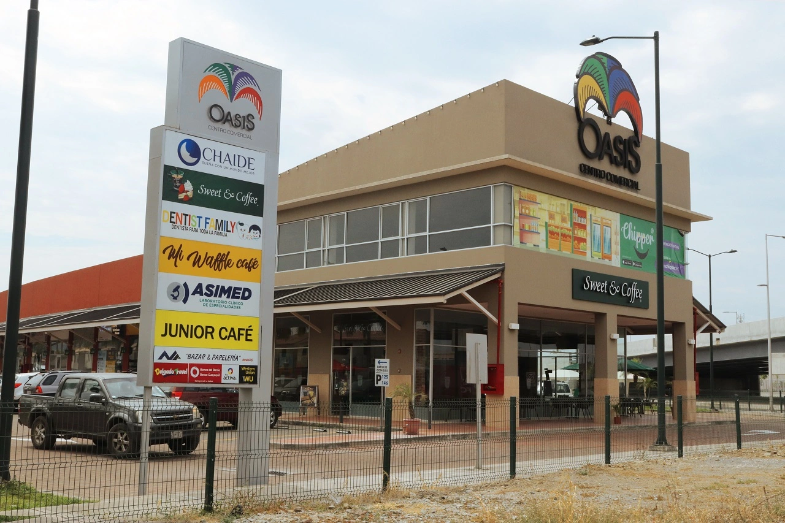

The scope of this chamber of commerce encompasses the Mucho Lote 2 sector and its surroundings:
Metropolis, Romareda, La Perla, Ciudadela del Maestro, etc. With a population in constant growth,
families are ready to live within numerous neighborhoods following a peaceful lifestyle and with a
diverse range of ages.
El alcance de esta camara de comercio comprende el sector Mucho Lote 2 y sus cercanias: Metropolis,
Romareda, La Perla, Ciudadela del Maestro, etc. Con una poblacion en constante crecimiento, las
familias se disponen a vivir dentro de numerosas ciudadelas siguiendo un estilo de vida pacifico y
con un rango de edades muy diverso.
Attractions

Within the sector, there are recreation and commercial areas such as Romeria Plaza, Oasis Shopping
Center, Nexus Business Park, where all kinds of meetings, events, and entertaining activities take
place.
Dentro del sector hay zonas de recreacion y comercio tales como Romeria Plaza, Centro Comercial
Oasis, Parque Empresarial Nexus; donde se realizan todo tipo de reuniones, eventos y actividades
entretenidas.